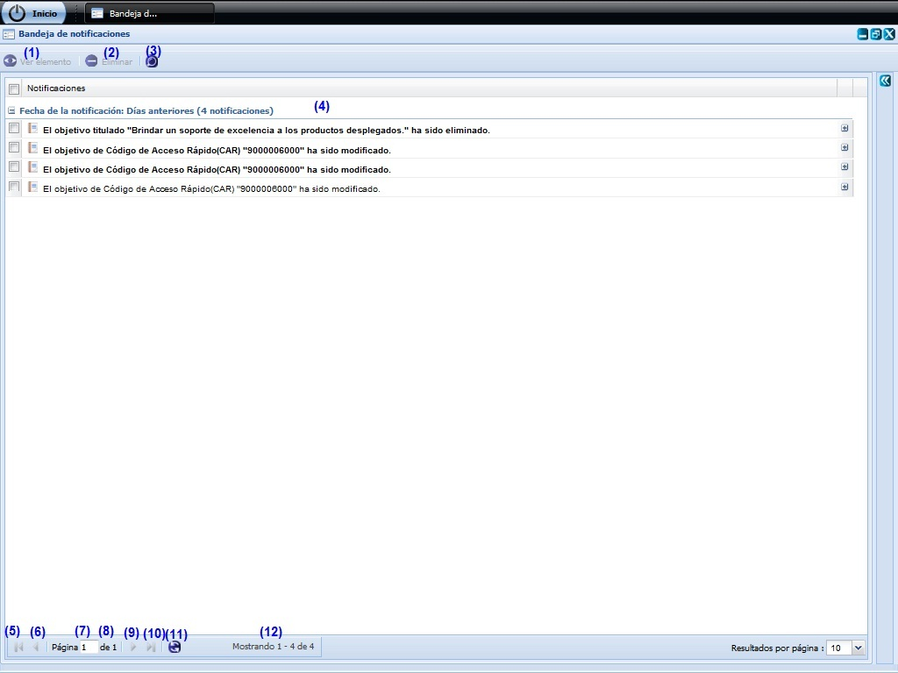
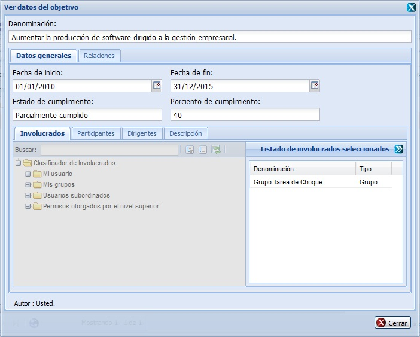
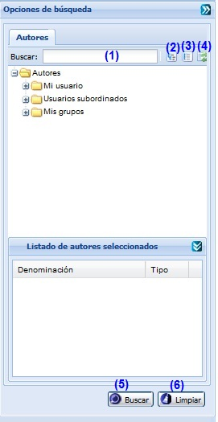

--BANDEJA DE NOTIFICACIONES--
Para acceder a esta funcionalidad el usuario debe estar autenticado y debe seleccionar la ruta: Inicio/Planificación/Planificación de actividades/Notificaciones/Bandeja de notificaciones.
Una vez seleccionado el menú Notificaciones se muestra en la interfaz la lista de notificaciones generadas para cada elemento. Las Notificaciones serán de tipo: Creado, Modificado, Eliminado, Cambio de Estado y Liberado. De cada notificación se muestra un resumen de datos desplegando el ícono con signo + que se encuentra a la derecha de la notificación. Ver figura 1.

Figura 1. Interfaz y acciones de la funcionalidad Notificaciones.
Las diferentes opciones que conforman la figura anterior permiten:
- Ver elemento que generó la notificación seleccionada. El botón Ver elemento se activa cuando la notificación no es de tipo Eliminado, en otros casos se presiona el botón y se muestran los resultados de la notificación, ver figura 2. La ventana que se muestra estará acorde con el elemento de la planificación que sea seleccionado.
- Eliminar una notificación previamente seleccionada en el listado. Esta acción permite eliminar la(s) notificación(es), una vez seleccionada(s) la(s) misma(s) se procede a seleccionar la opción Eliminar de la interfaz, automáticamente se mostrará un mensaje de confirmación, que se puede Aceptar o Cancelar según sea el caso, de presionar la opción Aceptar el sistema le mostrará un mensaje de información sobre el éxito de la operación realizada, quedando eliminada(s) la(s) notificación(es) seleccionada(s), si cancela el mensaje de confirmación, el sistema permanece en la interfaz principal y no elimina la(s) notificación(es). Inicialmente la opción Eliminar de la interfaz estará deshabilitado hasta tanto no se haya seleccionado al menos una notificación.
- Búsqueda avanzada de notificación(es), ver Acápite Búsqueda avanzada de notificación(es), esta acción permite buscar una notificación entre las notificaciones adicionadas en el sistema.
- Se muestra el listado de Notificaciones.
- Ir a la primera página, mostrando las primeras notificaciones.
- Ir a la página anterior.
- Mostrar el número de la página donde se encuentra, se puede introducir el número de la página a la que se desea ir.
- Mostrar el número máximo de páginas.
- Ir a la siguiente página.
- Ir a la última página.
- Actualizar el listado de notificaciones registradas en el sistema.
- Mostrar la cantidad de resultados encontrados.

Figura 2. Interfaz Detalles del elemento notificado.
Búsqueda avanzada de notificación(es)

Figura 3. Interfaz Buscar Notificaciones.
Las diferentes opciones que conforman la figura anterior permiten:
- Introducir el criterio de búsqueda para buscar notificaciones. Esta acción permite buscar una notificación en específico a partir del criterio introducido. Luego de introducido el criterio de búsqueda se muestra el autor que cumple con los datos especificados. En caso de que no exista un autor que coincida con el criterio de búsqueda especificado no se obtendrá ninguna respuesta.
- Expande todos los autores.
- Colapsa todos los autores.
- Refrescar todos los autores.
- Realizar la búsqueda en el árbol de autores.
- Limpiar filtro(s). Esta acción limpiará lo escrito en los parámetros de la búsqueda.